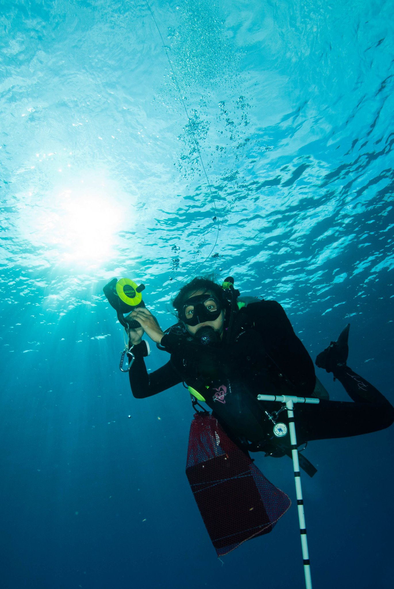

I’m a marine ecologist and theoretician currently working with Malin Pinsky as a postdoctoral associate at Rutgers University. My research focuses on the ecological and evolutionary drivers of coral reef dynamics, and I am particuarly interested in the effects of climate change on coral population persistence. I met my first corals in the waters off a small coastal town in the Philippines called Bolinao, where I spent the earliest years of my life. I’ve since explored reefs all over the world, though I’ve spent most of my scientific underwater time in the central Philippines and Florida Keys.
For my postdoc, I am investigating the role of networks on coral adaptive capacity using an eco-evolutionary framework that incorporates competition, dispersal and directional selection. I have also conducted work to understand the factors that maintain stability on reefs, including the possibility of alternative stable states, both at a single reef patch and across thousands of reefs in the Coral Triangle. Many of my models use larval dispersal estimates derived from ocean circulation models, and I’m currently working on a population genetics study of Acroporid corals on the Islands of Cebu and Leyte in the Philippines in order to obtain empirical estimates of coral dispersal distance.
I received my Bachelor’s degree from the University of Miami’s Rosenstiel School of Marine and Atmospheric Science, and my PhD from the Department of Ecology and Evolutionary Biology at Princeton University.
Photo credit: Kirk Kilfoyle